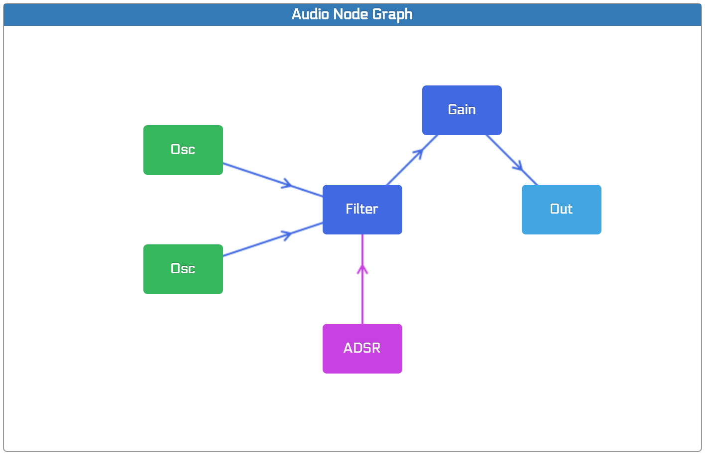
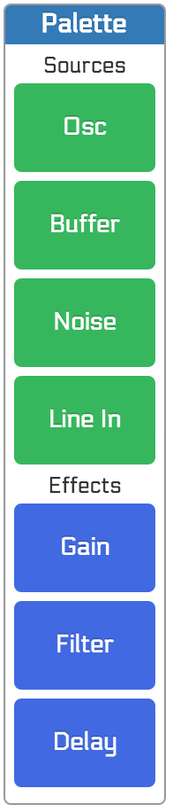
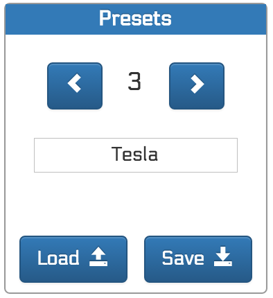
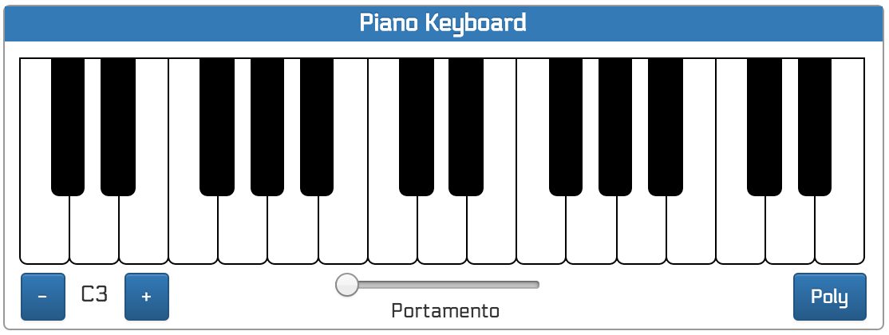

About Modulator
Modulator lets you graphically build a modular sound synthesizer. The sound is generated using the Web Audio API.Modulator components
The application displays several areas, each of which provides a specific functionality. These are the following:Audio routing graph editor
The graph editor lets you create an audio routing graph, interconnecting a set of audio nodes, from sound sources, to effects and finally to the synthesizer output.
Audio nodes are added by clicking on a specific node type from the
palette. They can be moved around the editor area by dragging them,
and deleted using the del key (or cmd + backspace
on the mac).
In order to connect two nodes, use the shift key:
- Place the mouse pointer over the source node
- Press the shift key
- Move the mouse pointer to the destination node (but don't press the mouse button or you will start dragging the node)
- Release the shift key to make the connection
To disconnect two nodes, use the same approach as when connecting them: if a connection already exists, it will be removed.
Audio node palette
The palette at the right of the graph editor provides all available audio nodes so they can be added to the graph. Just click on a given node and it will be added to the graph editor, so it can be connected.
There are three types of audio nodes available from the palette:
- Source nodes: nodes that generate a sound
- Effect nodes: nodes that modify a sound
- Control nodes: nodes that modify a parameter of another node
Audio node parameter editor

The node parameter editor lets you modify the parameters of the currently selected audio node. To select an audio node, just click on it on the graph editor, and its parameters will become available in the parameter editor.
Preset selector
A set of preset instruments are available by default, and the user can create new ones, save them and load them on a later session.
Piano keyboard
The piano keyboard can be clicked with the mouse, or the PC keyboard
can be used to send notes to the synthesizer. Key A corresponds
with the lowest pitch C key of the piano, and grows to M, then
continues on the upper row so Q corresponds with the middle C
key of the piano and grows to P.
If an external MIDI keyboard is connected, it can also be used as an input for notes.
The synthesizer is monophonic by default, but can be played in polyphonic mode. The number of polyphonic voices is set to 5. Synth editing is disabled in polyphonic mode, because of the inherent complexity of modifying the connections and parameters of all voices on the fly.